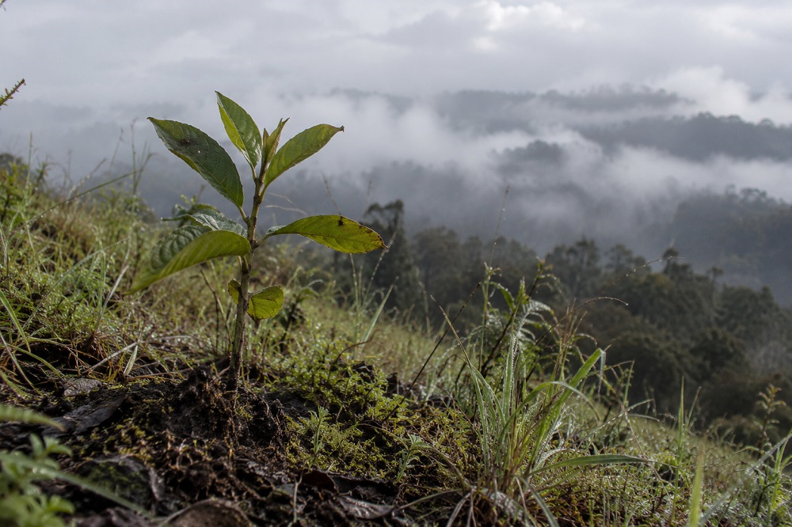

Home > Critical notes > From Quisquiza (15 of 20)
From Quisquiza (15 of 20)
Time
Trees Ignore Quarters
This note is part of a series written from Quisquiza, in the high-Andean cloud forest of Colombia, where ecological restoration and research now unfold side by side. It reflects on how living and working within this terrain gradually reshapes the way I think about memory, information, and the infrastructures built to sustain them. Check all the notes in this section's index.
I have been watching the young trees growing in the recovering areas around my house, up here in Quisquiza.
Watching them rather obsessively, actually.
Some produce new leaves, extend their stems, and seem to be making reasonable progress. Others look precisely as they did several weeks ago. I inspect their leaves, examine the soil around them, and search for signs of activity that might justify my increasingly frequent visits.
But trees do not grow continuously, or at the same rate. Growth responds to temperature, rainfall, light, nutrients, competition, and the biology of each species. A period of rapid expansion may be followed by weeks of apparently negligible activity. A young tree may invest resources in developing roots, strengthening its stem, or replacing damaged tissues without becoming noticeably taller.
And what happens during one period may only become apparent much later.
Even tree rings, those supposedly convenient records of elapsed time, complicate matters in tropical environments. Some species produce recognizable annual rings; others form growth bands whose relationship with calendar years is considerably less straightforward.
The tree has a history. But it does not necessarily divide that history into the units we would prefer.
Which is unfortunate, because we humans are extremely fond of dividing time into units.
Weeks. Months. Quarters. Fiscal years. Funding cycles. Strategic plans. Project periods. Annual evaluations.
We establish objectives, measure progress, and determine whether something has succeeded within a predefined interval. The interval usually corresponds to an administrative necessity: when budgets close, when contracts expire, when reports are due.
Nothing wrong with that, in principle. Accountability matters. Resources are limited. Nobody wants to finance an endless project whose only measurable achievement is the production of increasingly elaborate explanations for why nothing has happened.
(Although I have encountered a few remarkable specialists in that particular field. I'm sure you know them.)
The problem begins when the interval used to measure something does not correspond to the timescale of the process being measured.
Imagine two young trees planted on the same day. Six months later, one has doubled in height. The other has barely changed. A perfectly accurate measurement identifies the first as the faster-growing individual.
But does that tell us which is establishing itself more successfully? Not necessarily.
One might have developed a more extensive root system. The other might be growing rapidly aboveground while remaining vulnerable to water shortages or mechanical damage. Their differences may reflect species, site conditions, or growth strategies rather than superior or inferior performance.
To understand what is happening, we need to observe more than height. And perhaps for longer than six months. The interesting thing here is that the measurement can be entirely correct while the conclusion drawn from it is wrong.
It becomes even more problematic when we use that conclusion to make decisions.
Suppose we reward the first tree and discard the second. Not because we have established that the second is unhealthy, but because its development does not fit the interval within which we expect results.
Now the measurement is doing something more than describing growth. It is selecting which forms of growth deserve to continue. And that brings me, inevitably, to libraries, archives, research, and the institutions responsible for producing and preserving knowledge.
Consider a project established to document the knowledge of a particular community. Its first year might be devoted to establishing relationships, negotiating consent, understanding local expectations, identifying participants, and discussing what should or should not be recorded. At the end of that year, the collection may contain very little material.
Another project, working under different circumstances, may have produced hundreds of interviews, thousands of photographs, and a searchable database.
Which has accomplished more? Well, we don't know.
We know which has produced more documents. That is a perfectly legitimate measurement. But we cannot assume that the number of documents adequately describes the quality of the relationships, the responsibilities established, or the likelihood that the resulting archive will remain meaningful to the people involved. Those things may develop according to very different temporalities.
The problem is not merely that institutions demand results too quickly. It is that their reporting intervals can make certain kinds of work visible while leaving others practically invisible. And the consequences accumulate.
Projects designed to produce immediate, countable outputs become easier to evaluate, finance, and justify. Work whose outcomes emerge gradually, irregularly, or unpredictably becomes harder to defend. Researchers learn which questions fit available funding periods. Archivists learn which activities generate favorable indicators. Institutions gradually organize themselves around what can be demonstrated within the time allocated to demonstrating it. The calendar begins influencing the work.
Sometimes the distortion becomes quite absurd.
Imagine an archive that begins reviewing its historical descriptions with the communities represented in its collections. During the first year, previously unrecognized errors emerge. Disputed classifications multiply. Records previously considered complete require revision. New questions appear faster than the institution can answer them.
According to certain performance indicators, the situation has deteriorated. There are now more unresolved problems than before.
But that apparent deterioration might be evidence of something extremely valuable: people who previously had no opportunity to challenge the archive's descriptions are finally exercising that authority.
The institution has not necessarily become worse at its work. It may have become better at recognizing work that needed doing. A short reporting interval can mistake that recognition for failure.
Of course, extending the observation period does not automatically solve everything. Some processes genuinely fail. Some projects waste resources. Some institutions invoke the supposed complexity of their work to avoid answering perfectly reasonable questions. And time, by itself, guarantees absolutely nothing.
A tree can spend ten years growing under unsuitable conditions and remain unhealthy. An archive can preserve the same discriminatory description for a century. An inefficient institutional practice does not acquire wisdom merely because everybody has tolerated it since 1974.
The point is not that longer is better. It is that different processes require different kinds of evidence, collected at appropriate moments, before meaningful judgments can be made.
Sometimes we need immediate indicators. Sometimes repeated observations. Sometimes evidence of relationships that have developed, problems that have become visible, or responsibilities that continue long after the original project has ended. And sometimes we need the intellectual honesty to say that we do not yet know what the results mean.
Back outside, the young trees continue their complicated negotiations with this difficult mountain landscape where they were born. A few new leaves here. A stem that seems thicker there. One little fellow apparently determined to remain exactly the same size forever.
I can measure their height today. I can measure it again next month. Those measurements will tell me something useful. But I will need other observations, and more time, to understand what is actually happening.
Tomorrow, I will probably check them again.
The measurements will be accurate. Whether I will know what they mean is another matter.